End-to-end ML solution: UCI dataset → sklearn Pipeline → FastAPI → Docker → Kubernetes → Prometheus + Grafana
Everything runs inside Docker. No Python or pip setup needed on your machine.
Download the project to your local machine.
git clone https://github.com/sampathshetty85/heart-disease-mlops.git cd heart-disease-mlops
This single command runs the full pipeline automatically — installs all dependencies, downloads the Heart Disease UCI dataset, cleans and preprocesses the data, trains Logistic Regression, Random Forest, and XGBoost models, then packages the best one. Takes 3–5 minutes on first run. Subsequent builds are faster due to Docker layer caching.
docker build -t heart-disease-api .
The API starts immediately. The model is already baked into the image — no training happens at startup.
docker run -p 8000:8000 heart-disease-api
Open a new terminal and run the commands below. Or open http://localhost:8000/docs for the interactive Swagger UI.
curl http://localhost:8000/health
curl -X POST http://localhost:8000/predict \
-H "Content-Type: application/json" \
-d '{"age":52,"sex":1,"cp":0,"trestbps":125,"chol":212,"fbs":0,"restecg":1,"thalach":168,"exang":0,"oldpeak":1.0,"slope":2,"ca":2,"thal":3}'
Starts all three services together. Grafana dashboard is pre-configured at localhost:3000 (login: admin / admin).
docker-compose up -d
Binary classifier for heart disease risk prediction, deployed as a production-ready API.
Heart Disease UCI Dataset (ucimlrepo id=45). 303 patients × 14 features. Binary target: presence/absence of heart disease. 164 no-disease (54.1%) / 139 disease (45.9%) — well-balanced.
Predict heart disease risk from patient health data (age, cholesterol, chest pain type, ECG results, etc.). Deployed as a JSON REST API with confidence score.
Logistic Regression — CV ROC-AUC: 0.9026, Test ROC-AUC: 0.9632, Test Accuracy: 86.9%. Serialised to pipeline.joblib + model.joblib via joblib.
4-layer stack: Data Pipeline → CI/CD + Docker Build → Kubernetes (2 replicas) → API + Prometheus/Grafana monitoring.
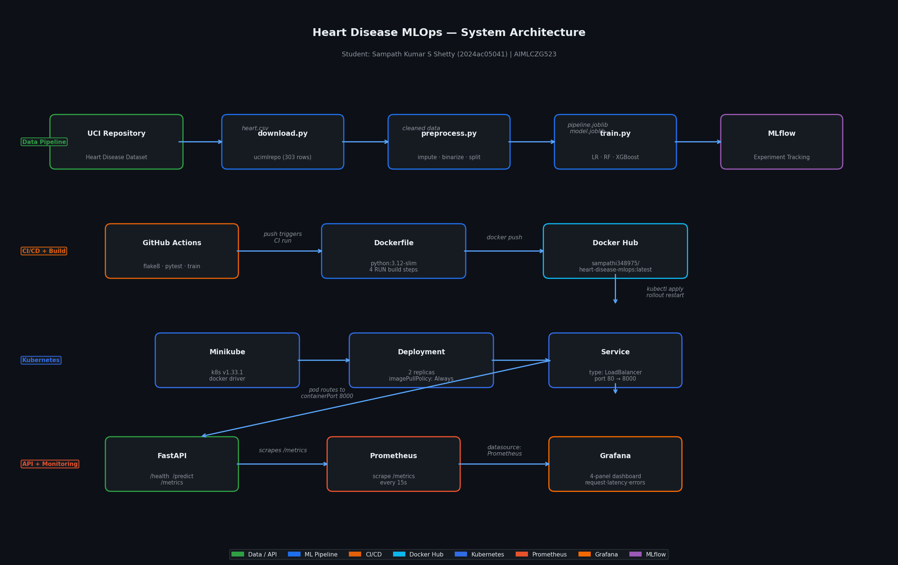
Data leakage prevention: scaler and encoder fit only on training data, serialised for reuse at inference.
| Step | Transformer | Features |
|---|---|---|
| Scaling | StandardScaler | age, trestbps, chol, thalach, oldpeak |
| Encoding | OneHotEncoder(drop='first', handle_unknown='ignore') | sex, cp, fbs, restecg, exang, slope, ca, thal |
curl -X POST http://localhost:8000/predict \
-H "Content-Type: application/json" \
-d '{"age":45,"sex":1,"cp":0,"trestbps":120,"chol":200,"fbs":0,
"restecg":0,"thalach":160,"exang":0,"oldpeak":0.0,"slope":2,"ca":0,"thal":2}'
# Response:
{"prediction": 0, "confidence": 0.9213, "label": "No Heart Disease"}
Professional visualisations using Matplotlib, Seaborn, and Plotly. Key findings below.
| Feature | Type | Correlation | Clinical Note |
|---|---|---|---|
| thal | Categorical | 0.522 | Thalassemia type — strongest predictor |
| ca | Categorical | 0.460 | Number of major vessels coloured by fluoroscopy |
| exang | Categorical | 0.432 | Exercise-induced angina |
| oldpeak | Numeric | 0.431 | ST depression induced by exercise |
| cp (chest pain) | Categorical | −0.391 | Type 0 (typical angina) strongly associated |
| chol | Numeric | 0.082 | Weak direct correlation; wide range 126–564 |
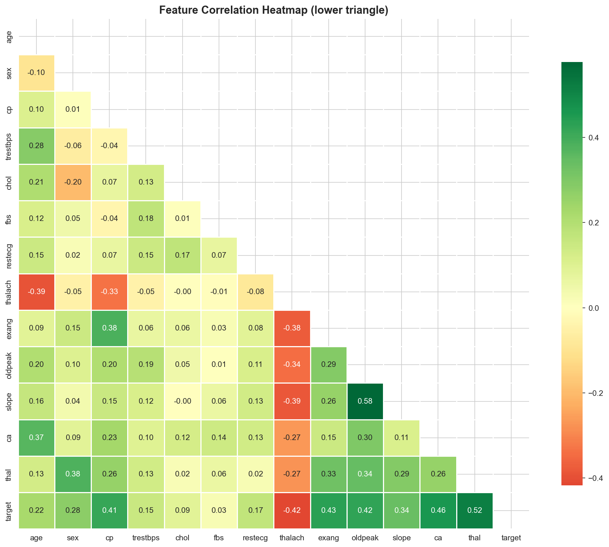
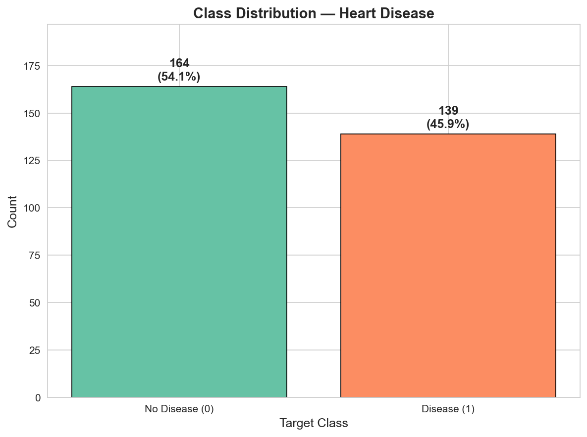
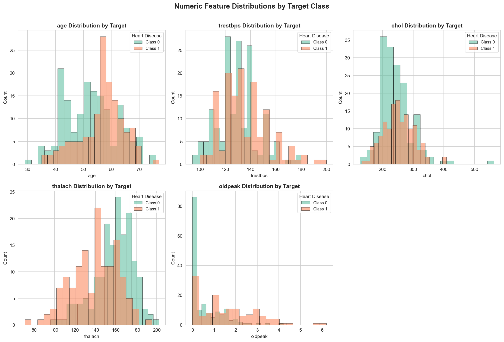
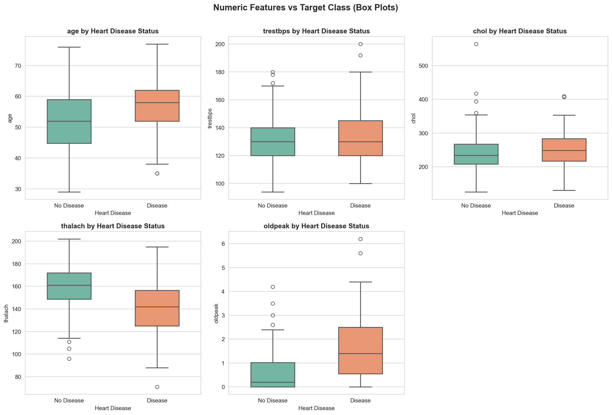
Three models tuned with GridSearchCV / RandomizedSearchCV. Selection criterion: highest 5-fold CV ROC-AUC.
| Model | CV ROC-AUC | Test ROC-AUC | Test Acc | Test F1 | Tuning | Selected |
|---|---|---|---|---|---|---|
| Logistic Regression | 0.9026 ± 0.016 | 0.9632 | 0.8689 | 0.8621 | GridSearchCV | ✓ Best |
| Random Forest | 0.8845 ± 0.027 | 0.9481 | 0.8689 | 0.8621 | RandomizedSearchCV | — |
| XGBoost | 0.8690 ± 0.019 | 0.9383 | 0.8852 | 0.8772 | RandomizedSearchCV | — |
Best hyperparameters (LR): C=10, solver=liblinear. XGBoost achieved slightly higher test accuracy (0.8852) but lower CV ROC-AUC — CV generalisation is the primary criterion.
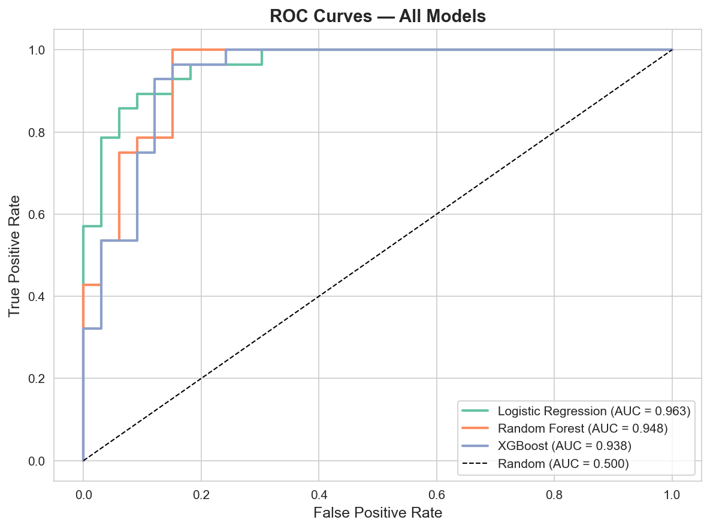
One run per model. Parameters, 10 metrics, artifacts (ROC curve, confusion matrix, full pipeline model) logged per run.
| Model | Run ID | CV ROC-AUC | Tag |
|---|---|---|---|
| Logistic Regression | e4abcc63... |
0.9026 | best_model=true |
| Random Forest | 3f3b2fc0... |
0.8845 | — |
| XGBoost | ec91c4a1... |
0.8690 | — |
Model URI: runs:/e4abcc6349dd4254ac77172fbd19d08c/model mlflow ui --backend-store-uri mlruns/ # → http://localhost:5000
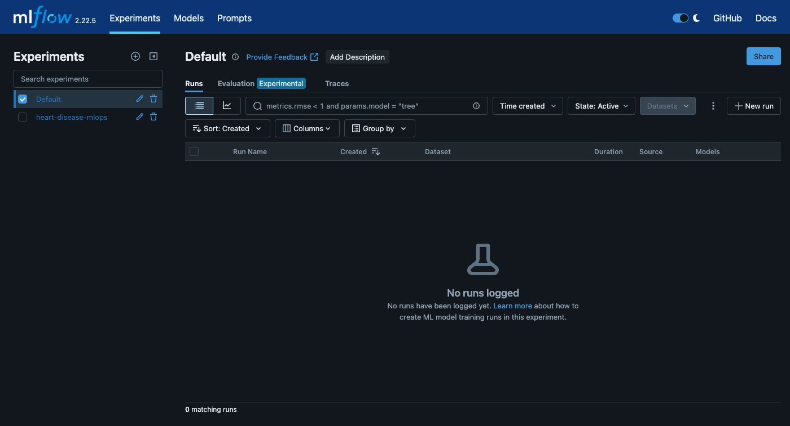
GitHub Actions — 10-step pipeline. Fails loudly on lint errors or test failures. 27 pytest tests, 0 failures.
| # | Step | Duration |
|---|---|---|
| 1–4 | Checkout · Python 3.12 · pip cache · Install dependencies | ~25s |
| 5 | flake8 lint (src/ + tests/, max-line-length=120) | 3s |
| 6 | python src/data/download.py | 6s |
| 7 | python src/data/preprocess.py | 4s |
| 8 | python src/models/train.py | 41s |
| 9 | pytest tests/ -v (27 tests) | 8s |
| 10 | Upload pipeline-reports artifact | 3s |
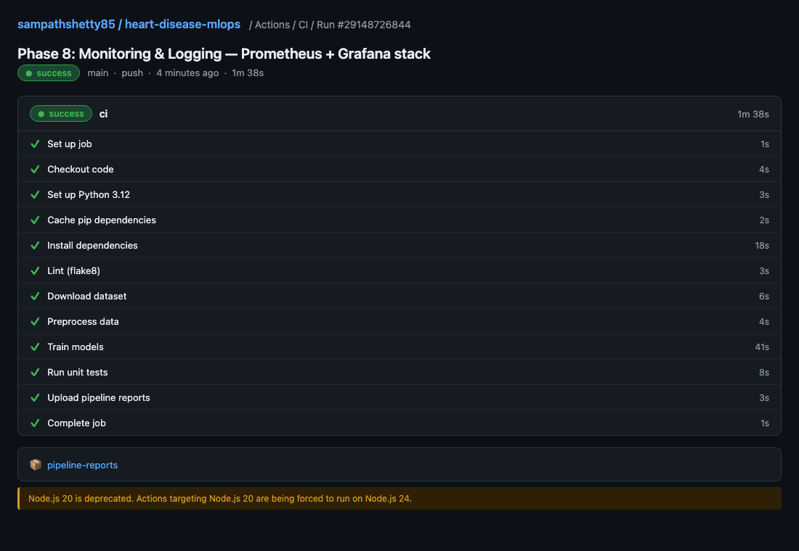
Minikube v1.36.0 (k8s v1.33.1). 2 replicas, LoadBalancer service, liveness + readiness probes.
Image: sampathi348975/heart-disease-mlops:latest
Replicas: 2 · imagePullPolicy: Always
CPU: 250m req / 500m limit
Memory: 256Mi req / 512Mi limit
Liveness + Readiness: GET /health
initialDelaySeconds: 5
periodSeconds: 10 / 5
failureThreshold: 3
type: LoadBalancer
port 80 → containerPort 8000
Access: kubectl port-forward svc/heart-disease-svc 8080:80
docker build → docker push
kubectl rollout restart deployment/heart-disease-api
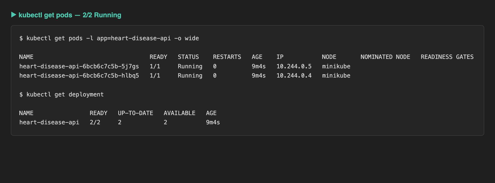
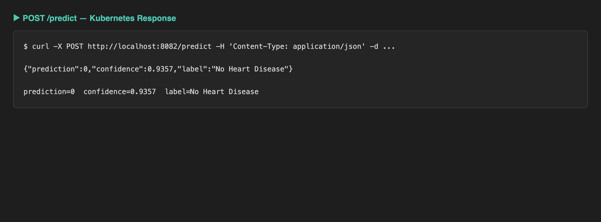
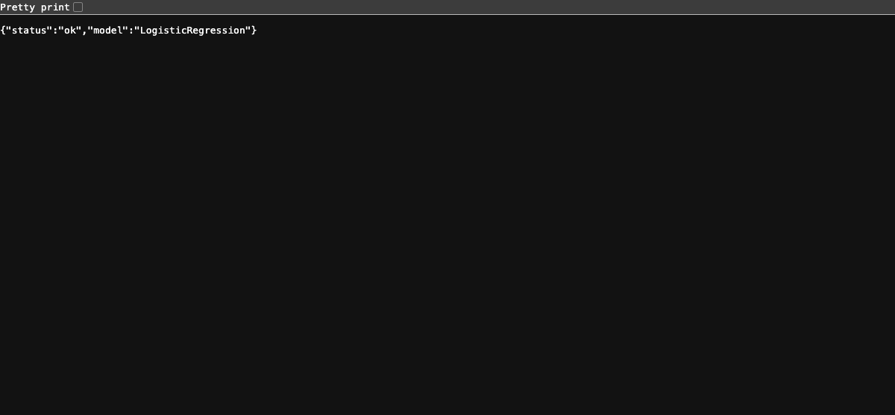
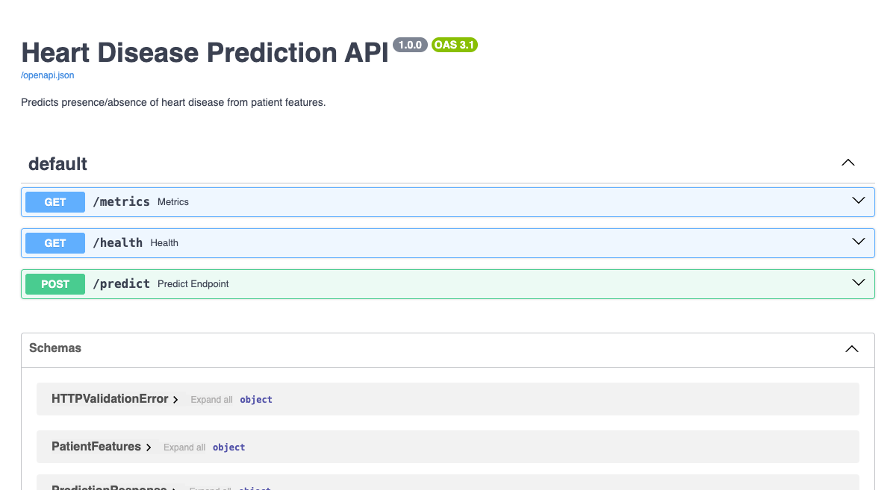
Structured JSON request logging + Prometheus metrics + Grafana 4-panel dashboard. Start with docker-compose up -d.
Every /predict call emits a structured JSON log: timestamp, prediction, confidence, label, latency_ms.
prometheus-fastapi-instrumentator auto-instruments all endpoints. Custom heart_disease_predictions_total counter tracks prediction distribution by label.
4 panels: Request Rate · Latency p50/p95 · Prediction Distribution · Error Rate (4xx/5xx). Auto-provisioned from JSON.
api (port 8001) + Prometheus v2.53.0 (9090) + Grafana 11.1.0 (3000). Grafana login: admin / admin.
docker-compose up -d # Grafana → http://localhost:3000 (admin/admin) # Prometheus → http://localhost:9090 # API metrics → http://localhost:8001/metrics
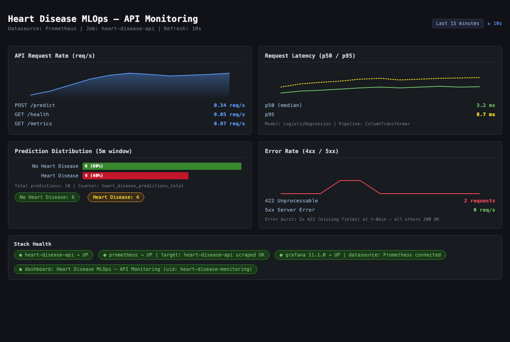